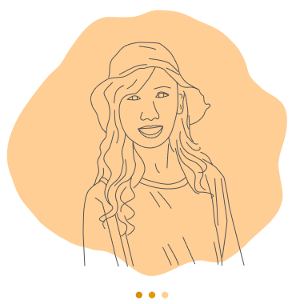

嗨! 我是林家鈴
UI/UX 設計師
我是一位有設計、研究和教育背景的 UI/UX 設計師。熱衷於觀察和傾聽人們的意見，並將想法內化後變成產品的靈感。
在成為 UI/UX 設計師，我在自殺防治中心擔任資訊專員，協助醫護人員解決平台問題，在這個經驗中發現自己對於產品設計的熱情。作為一個設計師，我喜歡透過設計思考與流程解決複雜的問題，並藉由參加讀書會與關注設計趨勢來不斷提升能力。
我樂觀且積極，總是把事情往好的方向想。我期待未來可以跟一個熱情又有趣的團隊一起工作，為更多人解決問題。放假時，你可能會在球場、山上或水下遇見我 :D
歡迎與我聯繫
Linkedin
/
Email
.